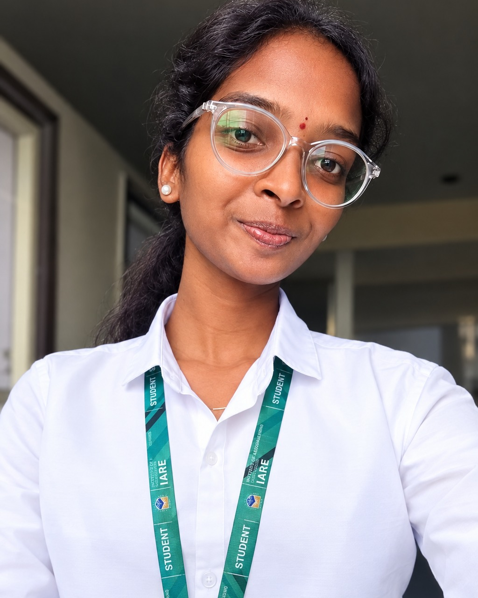

Problem Solving
Practicing Java and Data Structures to improve coding patterns and interview readiness.
ABOUT ME
I'm Pravalika, a B.Tech Computer Science Engineering student interested in software engineering, AI and full-stack development.

MY JOURNEY
I enjoy learning by building projects and solving programming problems. My current focus is strengthening Java and DSA while developing practical skills in full-stack development, APIs, databases and AI.
I'm especially interested in opportunities where I can learn from experienced engineers, contribute to meaningful products and continuously improve my problem-solving skills.
CURRENT FOCUS
Practicing Java and Data Structures to improve coding patterns and interview readiness.
Learning frontend, backend APIs, databases and deployment through practical projects.
Building useful AI applications that solve real user problems instead of only experimenting with models.